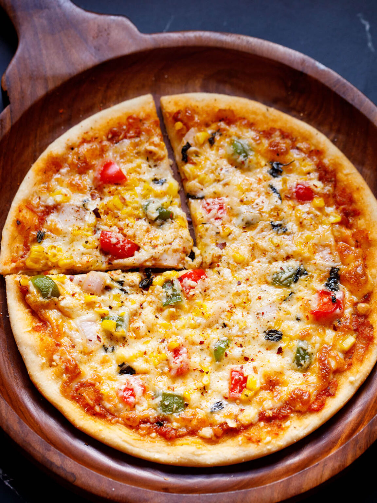

Pizza

- Pizza Base
- Tomato Paste
- Capsicum
- Mozzarella Cheese
- Feta Cheese
- Onion
- Olives
- Pineapples
Steps
Get the base ready with tomato paste and spread evenly and put a thin layer of mozzarella cheese.
Ensure that the oven is currently getting preheated and is ready at 200-250C (depends on your oven)
Place ingredients, capsicum, onion, olives, pineapples, feta cheese, and top off with some extra mozzarella cheese to cover it well
Place pizza into the oven and set a timer for 10 minutes
Once 10 minutes have passed, check if the pizza is done if there is slight golden brown on the cheese and or if the base feels crusty
Take out if done, let it rest for a few minutes and then cut
Serve and enjoy!
Go Back